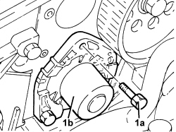

1088C14 WATER PUMP - R + R WITH TIMING BELT(S) REMOVED
- Path
- Procedures > 10 ENGINE > 1088 ENGINE COOLING > 1088C WATER PUMP AND THERMOSTAT > 1088C14 WATER PUMP - R + R WITH TIMING BELT(S) REMOVED
- Kind
- repair procedure (removal / refitting; the operation number is the code)
- Applies to
- engines: 1.9 JTD 8V, 1.9 JTD 16V; all production periods
- Interactive page
- https://sloeber94.github.io/elrnDB/alfa/159/en/#/939010674
Applies to: engines: 1.9 JTD 8V, 1.9 JTD 16V; all production periods
 Removing
Removing
 Refitting
Refitting1. Undo the bolts (1a) and remove the coolant pump (1b) complete with gasket.

Applies to: engines: 1.9 JTD 8V, 1.9 JTD 16V; all production periods
Refitting
Removing- Refit the water pump, complete with gasket, in its housing and secure it tightening the bolts to the recommended torque.
Component | Fastening | dia | Value (daNm) | Validity |
|---|---|---|---|---|
Water pump | Bolt | M8 | (cylinder head side) 2.3 - 2.8 | 1.9 JTD 8v 1.9 JTD 16v |